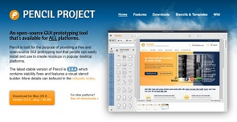
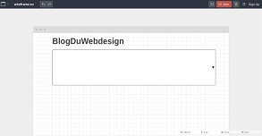
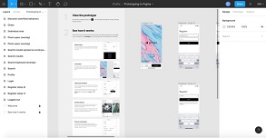
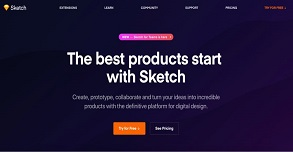
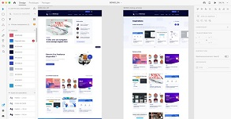
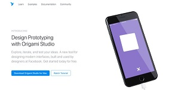
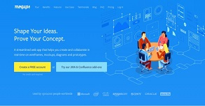
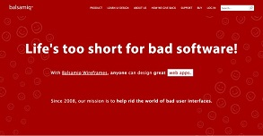

Les logiciels de Wireframe
Whimsical – Freemium

Un outil en ligne qui simplifie la création de wireframes et de prototype. L’outil est bien pensé et permet d’obtenir rapidement le rendu de votre projet avec des fonctionnalités intelligentes et une bibliothèque complète de composants.
Pencil – Gratuit
Pencil est un logiciel open-source 100% gratuit disposant d’une large bibliothèque de modèles et d’éléments de base pour un rendu précis et professionnel. Avec une navigation simple et intuitive, vous pouvez relier vos pages entre elles, et construire un wireframe parfait pour la représentation de la navigation de votre utilisateur sur le site ou l’application. Petit bémol, l’outil n’a pas été mis à jour ou n’a pas connu d’évolutions depuis 2013, ce qui ne nuit pourtant pas à son bon fonctionnement. Dispo sur Mac, Windows et Linux.
Wireframe.cc – Freemium
Wireframe.cc vous permettra de créer des maquette à son image : percutantes et épurées. Avec très peu de fonctions disponibles, vous devrez aller à l’essentiel. Sa prise en main peut sembler un peu difficile, mais cette solution permet tout de même d’avoir un résultat professionnel en très peu de temps. Le travail d’équipe est facilité avec l’ajout de commentaires ou le partage par URL. Disponible en version gratuite. Il vous faudra cependant passer en version payante pour exporter vos travaux : comptez à partir de 16€ par mois.
Figma – Gratuit
Un outil en ligne puissant pour créer des wireframes et des prototypes de vos applications. Il ressemble globalement à Sketch et permet de collaborer à plusieurs. Je l’ai utilisé dernièrement sur différents projets, c’est un outil puissant, assez simple à utiliser si on à l’habitude de Sketch.
Sketch – Payant
Ce n’est pas le plus simple à utiliser de cette liste. Mais si vous êtes un professionnel du design d’interface et que vous ne connaissez pas ce logiciel, je vous le recommande. En plus d’être pensé pour les web designers, vous trouverez de nombreuses ressources pour créer vos wireframes et prototypes. C’est l’équivalent d’un mix du meilleur de Photoshop et d’Illustrator centré sur la création d’interfaces.
Adobe XD – Payant
Similaire à Sketch, c’est un outil très complet qui permet la création de prototypes animés. Nous l’avons utilisé pour la création du nouveau design du BlogDuWebdesign est j’ai bien apprécié la partie collaboration de l’outil avec à l’éco système Adobe. On peut facilement ajouter des commentaires sur les maquettes, suivre l’avancement ou encore simulé une navigation à travers les différents éléments.
Origami – Gratuit
Crée par les designers de Facebook, Origami est un outil disponible sur Mac et iOs qui permet de réaliser des interfaces sans avoir à réaliser une seule ligne de code. Compatible avec Sketch, il permet de réaliser des wireframes très complets et visuels facilement grâce à une bibliothèques de ressources graphiques et une application intuitive. Petit bonus, c’est gratuit !
Moqups – Freemium
Avec sa bibliothèque d’éléments et de modèles configurables, Moqups est une application web facile d’utilisation et très complète. Autre avantage : Moqups est relié à Confluence et JIRA pour le travail en équipe. Cette solution permet également d’organiser vos wireframes en les reliant entre eux. Moqups existe en version gratuite, mais ses fonctionnalités y sont limitées, notamment l’export de brouillons en PDF ou jpg. Pour cela il faudra payer la version de base à partir de 13€ par mois.
Balsamiq – Payant
Balsamiq est l’un des outils les plus connus sur le marché du wireframing. Facile à prendre en main, il donne accès à une large librairie d’éléments de base (call to action, bloc de texte, image …) à déplacer sur votre surface de création par drag-and-drop. Très efficace, il permet donc de donner une bonne vue d’ensemble du résultat final désiré. On lui reprochera cependant son aspect un peu trop « dessin » avec des polices d’écritures un peu enfantines qui donnent un rendu peu professionnel. Cette application est disponible pour Windows, Mac et Linux avec un essai gratuit de 30 jours, puis à partir de 9$ par mois pour 2 projets simultanés.
Pour en savoir plus sur le maquettage, cliquez ci-dessous...
Documentation